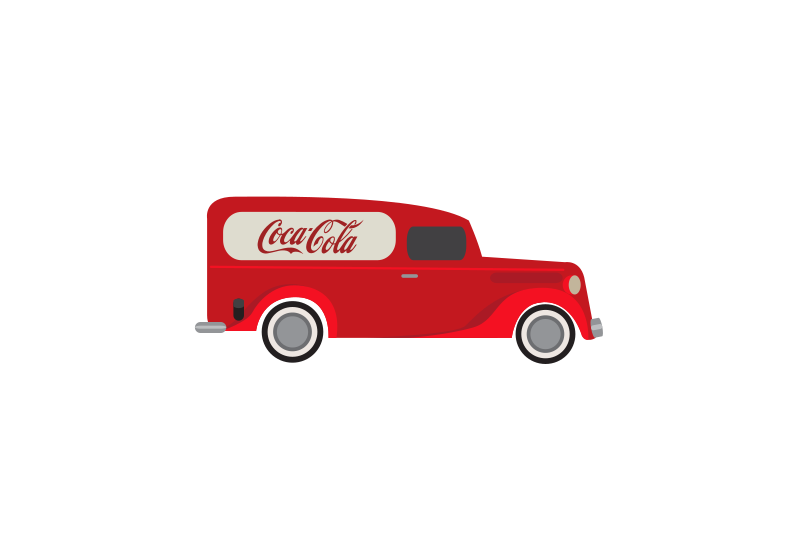
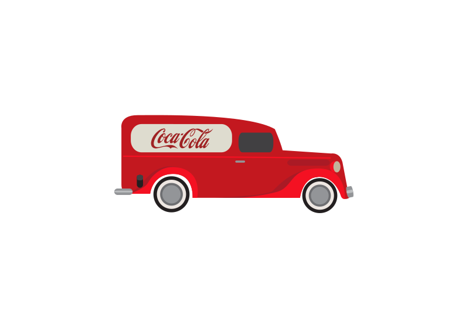

 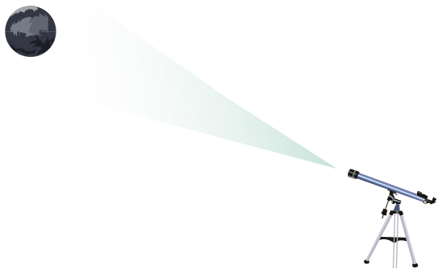
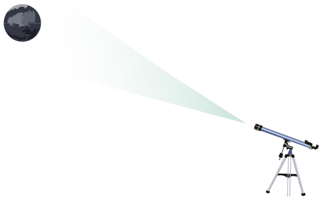
 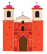
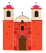
19 / MAR / 1915
Plutón es fotografiado por primera vez
16 / NOV / 1915
La propuesta de la Root Glass Company gana el concurso con la botella Contour, diseñada por Alexander Samuelson


20 / MAR / 1916
Albert Einstein publica la teoría de la relatividad
02 / JUL / 1916
Uruguay y Chile juegan el primer partido de la Copa América


1917
Las primeras botellas pesaban más de una libra: 411 gramos de vidrio, 184 mililitros de contenido


10 / ENE / 1920
El Tratado de Versalles pone fin a la Primera Guerra Mundial
4 / NOV / 1922
Howard Carter descubre la tumba de Tutankamón
MAY / 1928
México participa en los Juegos Olímpicos de Amsterdam con nueve jugadores del América
ENE / 1923
Carlos Garcés inventa el Chiquitibum durante el viaje del América a Guatemala
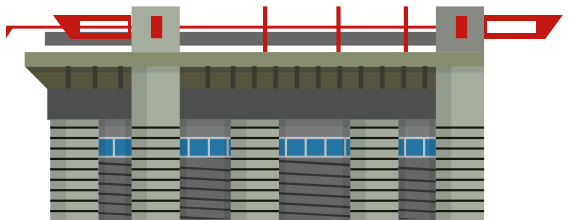


 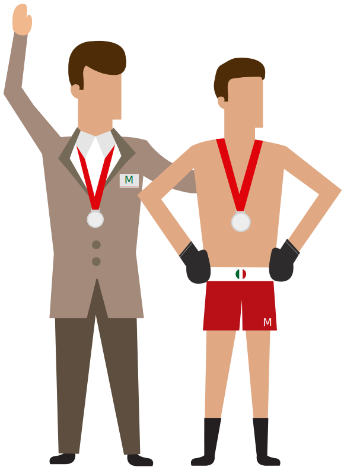
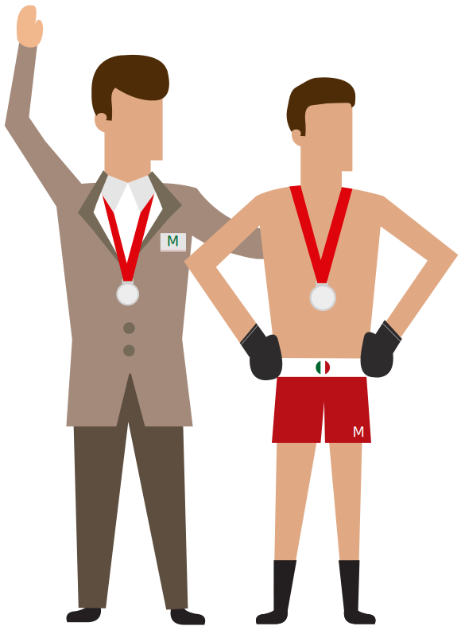
 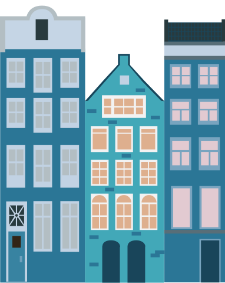
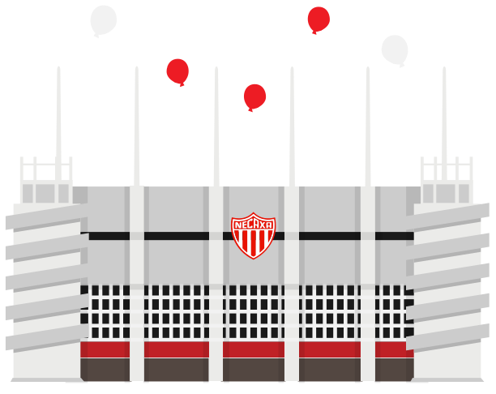
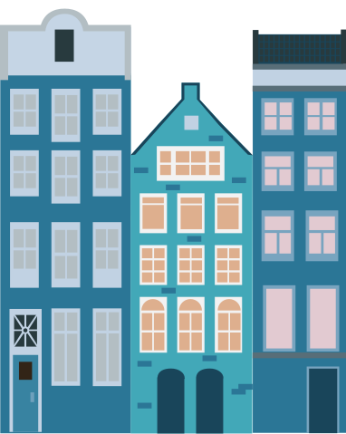
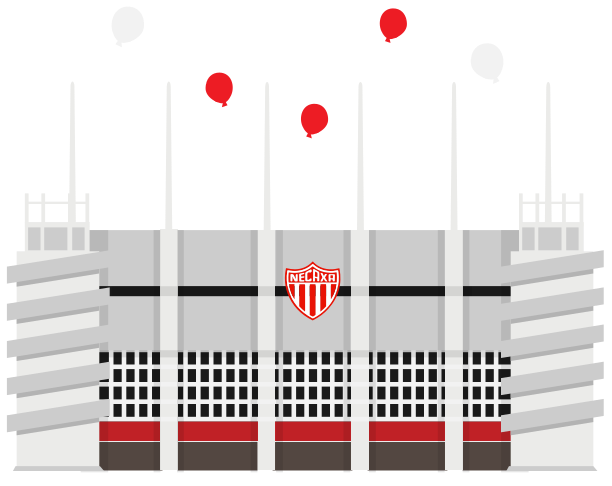
19 / sep / 1928
Se inaugura el Estadio Giuseppe Meazza
22 / Mar / 1927
Se funda el Cruz Azul
1928
Coca-Cola entra a Europa a través de Ámsterdam
10 / febrero / 1929
Se crea la Liga Española de Futbol. El primer campeón es el Barcelona
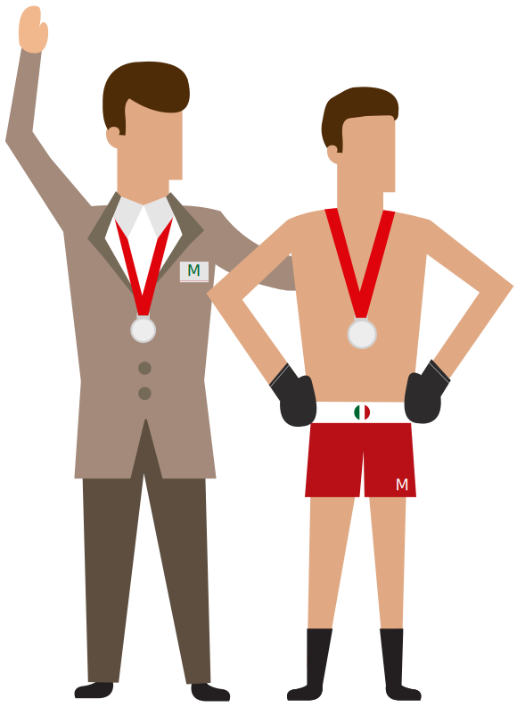
13 / Jul / 1930
Inicia la primera Copa del Mundo en Uruguay
1932
Gustavo Huet y Francisco Cabañas ganan las primeras medallas olímpicas de la historia para México
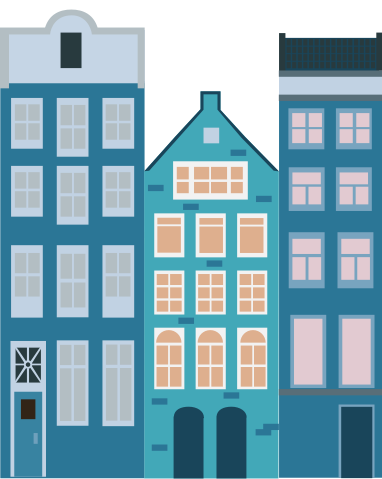
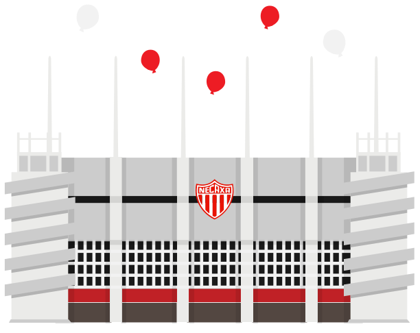
14 / Sep / 1930
Necaxa inaugura su estadio

1 / mar / 1936
Se inaugura el Parque Asturias
1937
Llegan a México el Barcelona y la Selección Vasca. Muchos de sus integrantes deciden quedarse en México

1935
Babe Ruth batea el último jonrón de su carrera
1938
México boicotea la Copa del Mundo. Declina participar en Francia 1938 por considerar que le correspondía a América ser sede
1944
Se juega el primer América vs Guadalajara
2 / ABR / 1943
Se inaugura la Arena Coliseo
 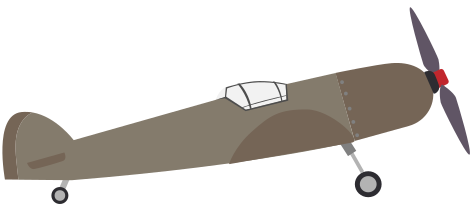
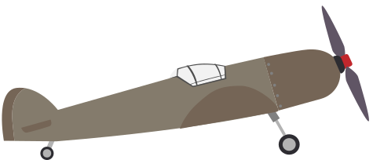

;){kind=link}

1942
El Duende aparece para anunciar que la palabra “Coke” se refiere también a Coca-Cola
1941
Desaparece Manufacturera de Materiales, S.A y nace Coca-Cola de México, S.A.
1944
Carlos Belmont es el primer mexicano en ganar el Campeonato Nacional de Golf

17 / OCT /1943
Inicia la era profesional del futbol en México. El primer campeón es el Asturias
2 / sep / 1945
Fin de la Segunda Guerra Mundial
24 / oct / 1945
Se funda la ONU
31 / ago / 1946
Primera transmisión televisiva en México, por Guillermo González Camarena
15 / ago / 1947
Independencia de la India

14 / dic / 1947
Se inaugura el Estadio Santiago Bernabéu
129 / jul / 1948
Juegos Olímpicos de Londres

1949
El equipo los Rojos del México adopta el nombre de “Los Diablos Rojos”

16 / jul / 1950
Uruguay gana el Mundial tras vencer a Brasil en Maracaná
15 / may / 1950
Coca-Cola se convierte en el primer producto en aparecer en la portada de la revista Time

20 / nov / 1952
Un partido de futbol americano inaugura el estadio de Ciudad Universitaria

1955
Coca-Cola lanza sus presentaciones en botella grande y botella familiar

5 / jul / 1954
Elvis Presley graba sus primeros cortes en Sun Records
3 / jul / 1955
Primera elección en que las mujeres ejercen su derecho al voto en México

30 / abr / 1955
Abre sus puertas la Torre Latinoamericana
13 / jun / 1955
Real Madrid, primer campeón de Europa
 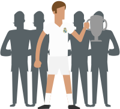
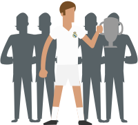
24 / sep / 1957
Se inaugura el Camp Nou
29 / jun / 1958
Brasil y Pelé ganan en Suecia su primera Copa del Mundo
3 / nov / 1957
La perrita soviética Laika es enviada al espacio abordo del Sputnik 2
1953
Se constituye la Federación Mexicana de Tenis
1954
Beto Ávila es líder de bateo en las Grandes Ligas
1960
Se lanza la lata de aluminio Coca-Cola de 12 onzas

7 / jun / 1962
En Chile 1962 México gana su primer partido en un torneo de ese tipo
28 / ago / 1964
Chivas es el primer equipo mexicano que juega en Europa. Gana 2, empata 4 y pierde 4
29 / may / 1966
América y Torino empatan a 1 en la inauguración del Azteca. Arlindo anota el primer gol al minuto 10
1966
América gana su primer título profesional
15 / ene / 1967
Green Bay Packers derrota 35-10 a los Kansas City Chiefs en el primer Super Bowl
1969
Rubén “Púas” Olivares gana el Campeonato Mundial Gallo. Primer campeón mexicano invicto
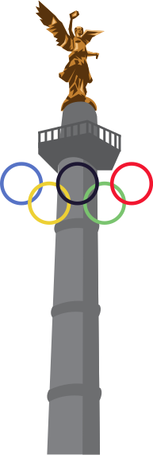
12 / oct / 1968
Se inauguran los XIX Juegos Olímpicos en la Ciudad de México

2 / mar / 1969
Se realiza el primer vuelo del Concorde
21 / jul / 1969
Neil Armstrong se convierte en el primer ser humano en pisar la luna
1971
Se lleva a cabo el II Campeonato Mundial de Futbol Femenil en México
4 / sep / 1968
Se inaugura el metro de la Ciudad de México
21 / jun / 1970
Pelé encabeza a la selección brasileña que gana la Copa del Mundo
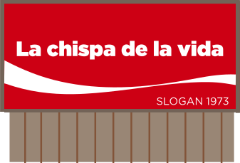
19 / sep / 1971
Lanzan el comercial “me gustaría comprarle al mundo una Coca-Cola”, uno de los anuncios más populares
1976
Nace el Instituto Nacional del Deporte

14 / abr / 1978
El América gana la Copa Interamericana al vencer a Boca Juniors en la final

22 / nov / 1978
México queda fuera del Mundial de España, tras una desastrosa actuación en el Premundial de Honduras

19 / jul / 1981
Hugo Sánchez llega al Atlético de Madrid
25 / sep / 1985
Casimiro Reyes gana el primer Maratón de la Ciudad de México

1982
Italia es Campeón del Mundo
15 / jul / 1985
Hugo Sánchez firma con Real Madrid. Anota 208 goles
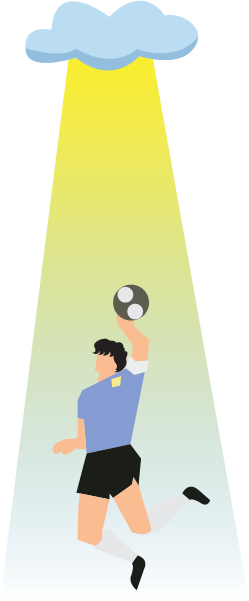


 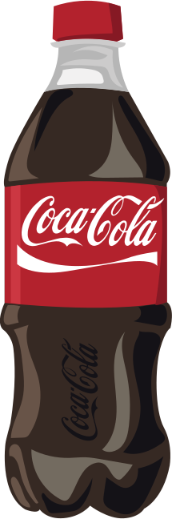
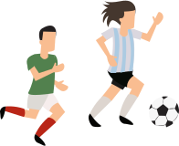
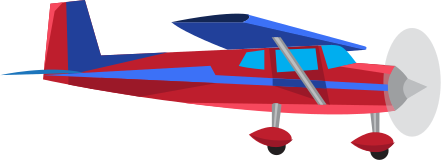
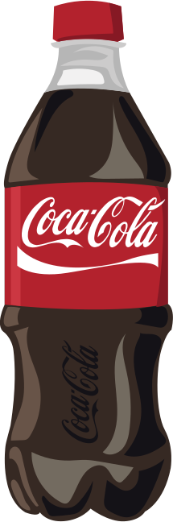
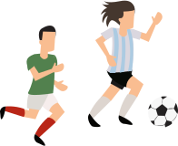
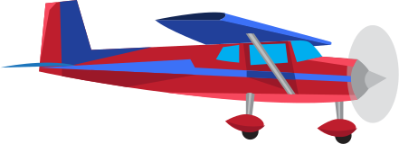
29 / jul / 1986
Maradona guía a Argentina a levantar la Copa del Mundo México 1986
1986
Coca-Cola cumple 100 años
1989
Ricardo Torres Nava, primer mexicano en ascender a la cumbre del Everest
9 / nov / 1989
Caída del Muro de Berlín
1989
Julio César Chávez es el 1er mexicano que gana un título en 3 divisiones diferentes
25 / dic / 1990
Presentación de la World Wide Web
dic / 1991
Disolución de la Unión Soviética
1990
Hugo Sánchez logra su quinto Pichichi, con 38 anotaciones
1993
Lanzamiento de la botella contour de PET de 20 onzas
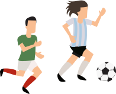
4 / jul / 1993
México participa por primera vez en la Copa América. Pierde la final 2-1 con Argentina
1992
Se realizan los Juegos Olímpicos de Barcelona
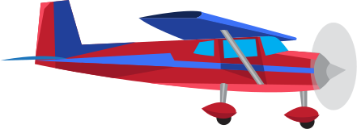
1994
En el Panamericano de marcha, México se lleva los cuatro primeros lugares en 50 kilómetros


15 / sep / 2000
Juegos Olímpicos de Sidney
28 / jun / 2001
Cruz Azul sorprende en la Libertadores. Llega a la final, pero cae en penales
2003
El español Fernando Alonso se convierte en el piloto más joven en ganar un Gran Premio y en obtener una pole position
2002
Ana Guevara gana la Golden League de la IAAF

16 / abr / 2003
Michael Jordan juega su último partido. Atleta retirado mejor pagado: 100 mdd

13 / ago / 2004
Juegos Olímpicos de Atenas


1 / sep / 1999
Finalizan los viajes en ferrocarril en todo el país
jul / 2006
Ronaldo juega su cuarta Copa del Mundo y llega a 15 anotaciones

9 / jul / 2006
Cabezazo de Zidane a Materazzi en la final de Alemania 2006. Qatar lo conmemora con una estatua

2 / nov / 2007
México es subcampeón del Mundial de Playa
ene / 2013
Messi se convierte en el máximo ganador del Balón de Oro
6 / jun / 2015
El Barcelona consigue el segundo triplete de su historia
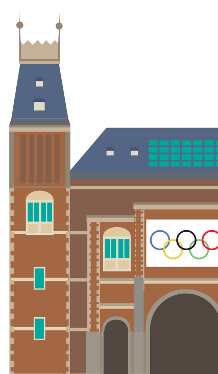


25 / ago / 1960
Juegos Olímpicos de Roma


8 / ago / 2008
Usain Bolt se convierte en el hombre más rápido del mundo. Corre 100 metros en 9,58 segundos
11 / jul / 2010
España es Campeón del Mundo por primera vez en Sudáfrica
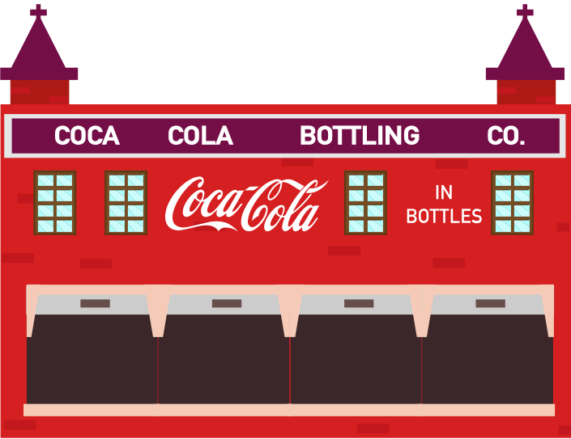
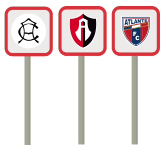


1916
Se fundan el club América, Atlas y Atlante
19 / SEP / 1915
Juan Rulfo, autor de Pedro Páramo
10 / ABR / 1919
Emiliano Zapata
1 / ENE / 1923
La Selección Mexicana juega su primer partido. Gana 3-2 a Guatemala en el Estadio Campo Marte

1 / Jun / 1926
Marilyn Monroe

11 / Nov / 1928
Carlos Fuentes

1925
Se funda la Liga Mexicana de Béisbol

1931
El artista Haddon Sundblom crea la imagen de Santa Claus bebiendo Coca-Cola

1933
José Pérez “Battling Shaw” es el primer mexicano en conquistar un campeonato mundial de boxeo

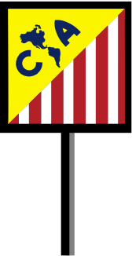

 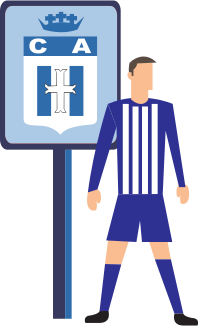
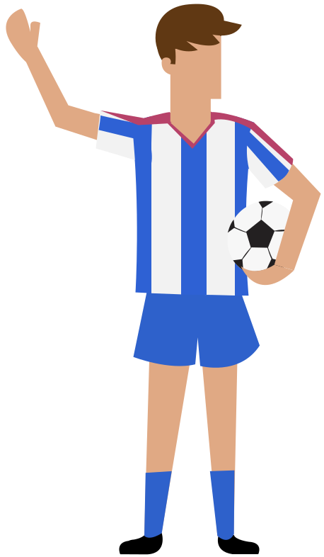
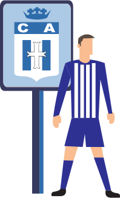
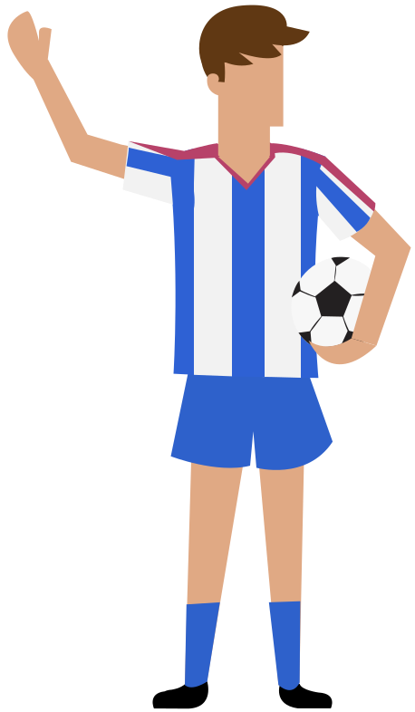

1940
“Rey” Pelé
17/ ENE / 1942
Muhammad Ali
DIC / 1942
Joaquín Capilla logra el oro en plataforma y trampolín en los Juegos Centroamericanos
1945
El argentino Roberto Aballay es campeón de goleo con 40 anotaciones
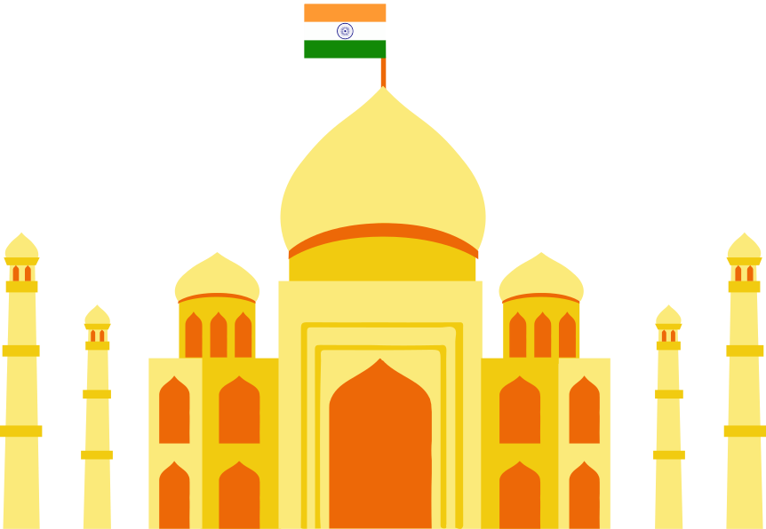
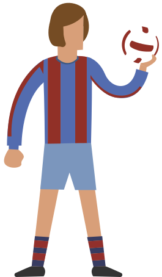

 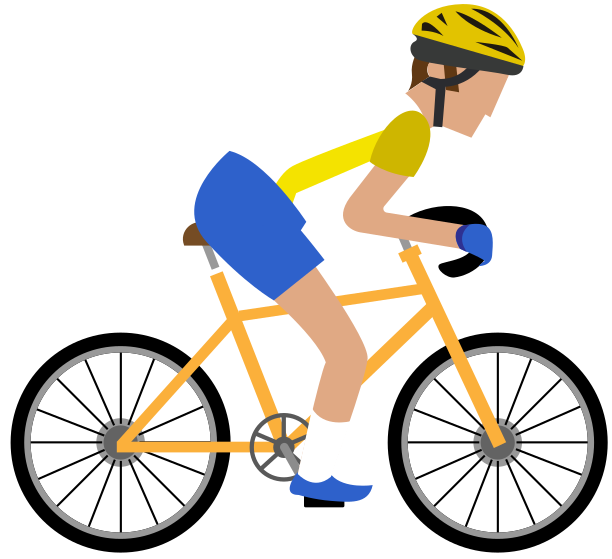
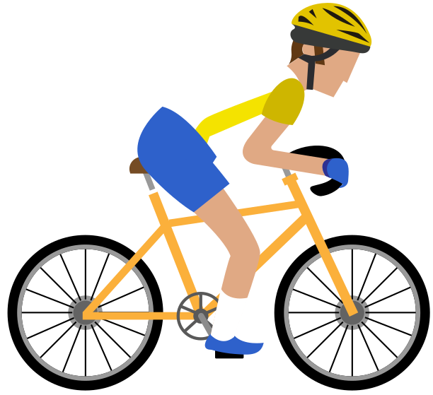


25 / abr / 1947
Johan Cruyff
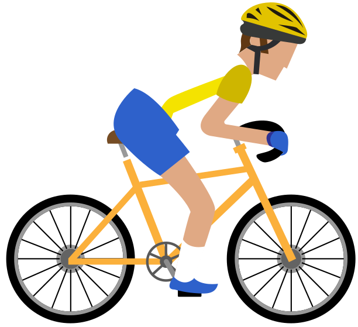
4 / jul / 1554
Alemania gana su primer Mundial al vencer a Hungría
28 / Ago / 1954
Se fundan los Pumas
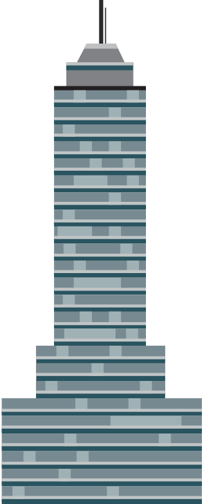
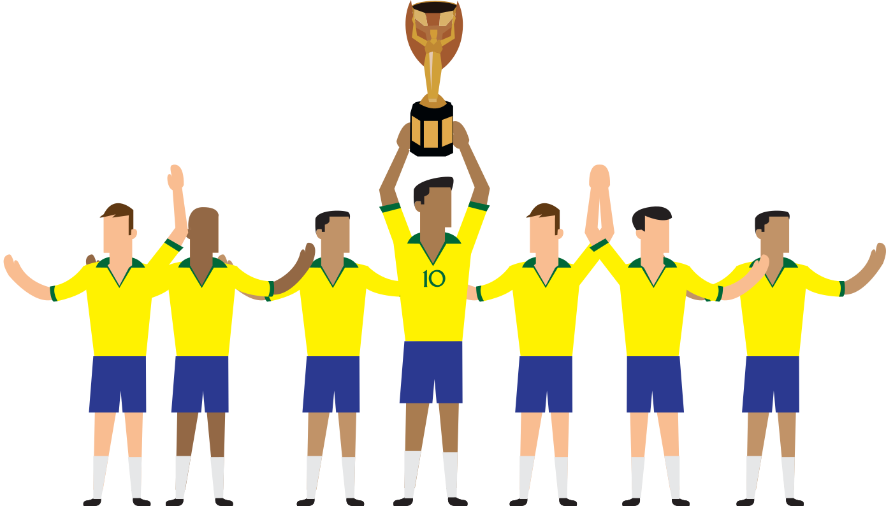
 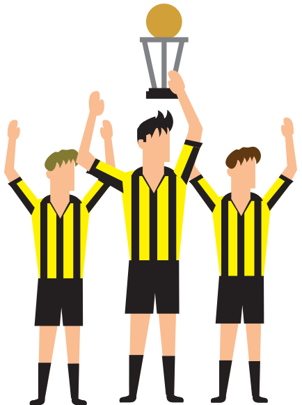
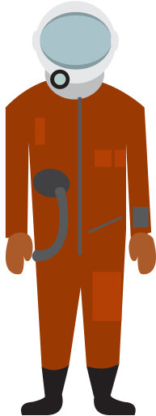
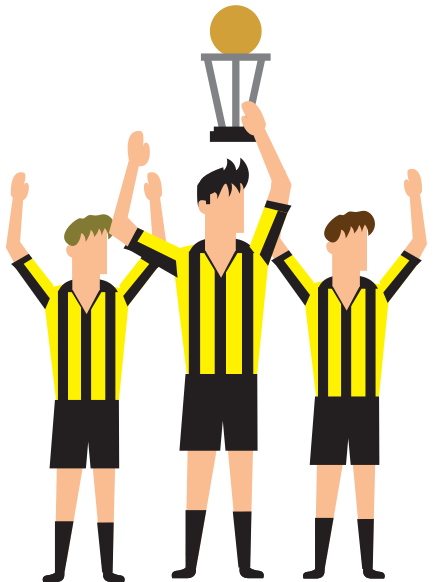
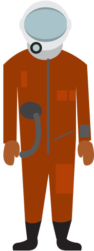
 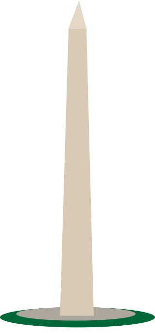
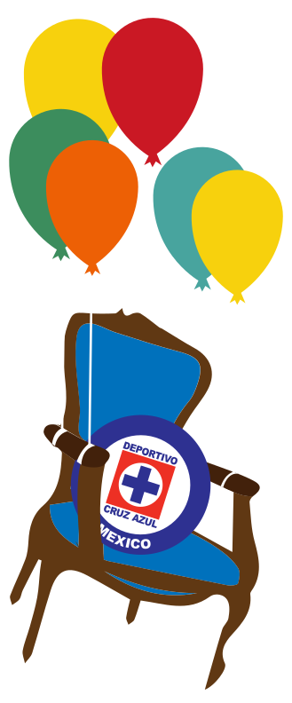
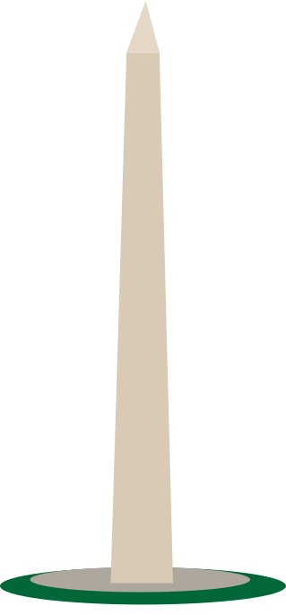
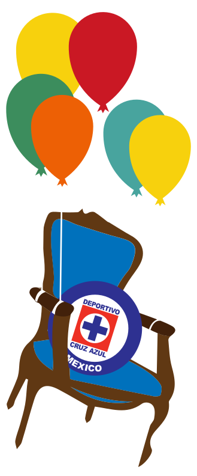

21 / mar / 1960
Ayrton Senna
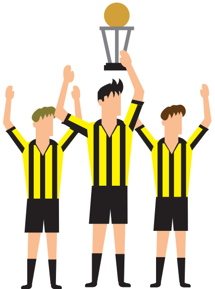
19 / jun / 1960
Peñarol gana la Primera Copa Libertadores (entonces Copa de Campeones)
12 / ABR / 1960
Yuri Gagarin, de la Unión Soviética, primer ser humano en ser lanzado al espacio
1961
Ricardo Rodríguez, a sus 21 años, es elegido Deportista del Año
1963
Nace el Consejo Mundial de Boxeo
1964
Cruz Azul asciende a la Primera División
10 / oct / 1964
Juegos Olímpicos de Tokio
 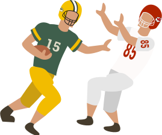
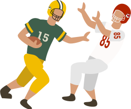


1969
Nace la Liga Colegial de Futbol Americano

26 / ago / 1972
Se llevan a cabo los Juegos Olímpicos en Múnich


1973
Horacio Piña es el primer mexicano campeón de las Ligas Mayores

1975
Raúl Ramírez es proclamado el mejor tenista del mundo en singles y dobles
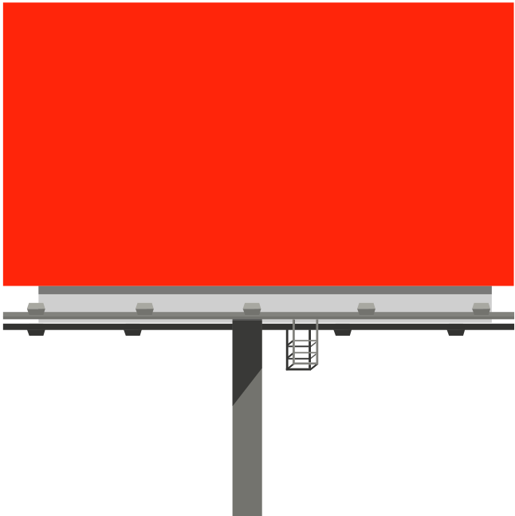
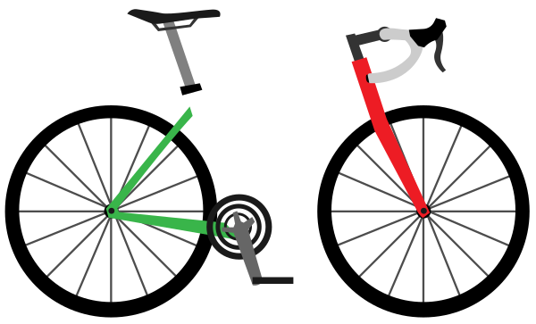
1976
México obtiene el oro en el Panamericano de Ciclismo

1980
Carlos Girón se queda con la plata en trampolín de 3 metros en los Juegos Olímpicos

22 / may / 1978
Se estrena la era Arcade
1980
Daniel Aceves, de 16 años, gana el Campeonato Mundial de Lucha


1989
Humberto “La Chiquita” González gana el título mundial mini mosca del CMB

20 / may / 1992
Barcelona gana su primera Copa de Campeones de Europa

28 / jul / 1991
Nace la Copa Oro

15 / ago / 1994
Se juega en México el American Bowl, juego de pretemporada de la NFL
1993
Los clásicos osos polares son introducidos en el comercial “Luces del Norte”


1997
El mexicano Horacio Llamas es contratado por los Soles de Phoenix
5 / jul / 1996
Dolly, primer mamífero clonado a partir de una célula adulta

1997
La NASA inicia exploración en Marte
12 / jul / 1998
Francia es Campeón del Mundial en su país
4 / ago / 1999
México es Campeón de la Confederaciones

6 / dic / 1997
Un partido de la NBA se juega por primera vez en México
2000
Tiger Woods es considerado el mejor golfista del mundo
11 / dic / 2004
Pumas logra el bicampeonato con Hugo Sánchez como DT
2005
Yelena Isinbáyeva bate el récord del mundo de salto con pértiga: 5,01m
2 / oct / 2005
México es Campeón del Mundo Sub 17
2008
Juegos Olímpicos de Pekín

ago / 2008
Michael Phelps rompe récord de medallas olímpicas de oro (8) en Pekín
11 / jun / 2009
Cristiano Ronaldo al Madrid, fichaje más caro del mundo. 94 millones de euros

19 / dic / 2009
Barcelona, único equipo en conseguir el sextete
18 / jun / 2011
México es Campeón del Mundo Sub-17 por segunda vez
11 / ago / 2012
México se lleva el oro en futbol en Londres 2012

11 / ago / 2012
Real Madrid consigue su décima Champions League
8 / jul / 2014
Alemania golea 7-1 a Brasil en el Mundial, la peor derrota en su historia
21 / dic / 2014
América obtiene su doceavo título y se convierte en el más ganador de la historia